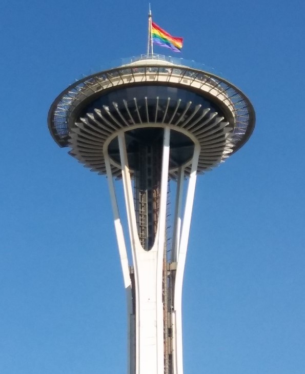

Steve Taylor's SCC WEB120 Portal
Welcome
My name is Steve Taylor and I'm currently in the process of becoming a Web Developer. I specifically have a strong interest in front end developement and enjoy the challenge of creating something new. I am originally from Arizona, but have called Seattle home now since 2014. I live with my partner Jared and our two dogs, Gizmo and Otis. My interests include: video games, board games, hiking, movies, and reading when I have the time!